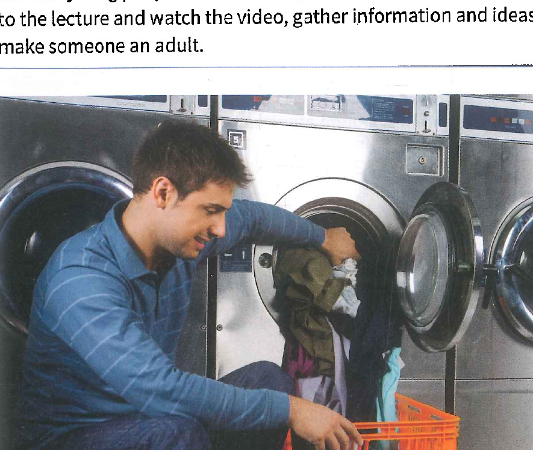
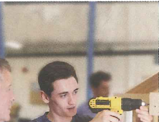

Unit 3: Developmental Psychology (Pages 52-75)
Unit 3 · Developmental Psychology
| Note-Taking | taking notes using key words and phrases |
|---|---|
| Listening | making predictions |
| Critical Thinking | assessing predictions |
| Vocabulary | using the dictionary: words with similar meanings |
| Grammar | phrasal verbs |
| Pronunciation | sentence stress |
| Speaking | giving a presentation |
Unit Question: What skills make someone an adult?
A. Discuss these questions with your classmates.
- In your opinion, at what age does a person become an adult? Why?
Sample answer: In my country, people become adults when they turn 19. I didn’t feel like an adult until I finished university when I was 24. - What important events or experiences can make you feel more like an adult?
Sample answer: Getting married or starting work can make someone feel like an adult. - Look at the photo. What is the person doing? How does this make them an adult?
Sample answer: The woman is voting. In all countries that I know of, you have to be a certain age before you can vote, usually the same age that makes you legally an adult.
B. Listen to The Q Classroom online. Then answer these questions.
Teacher: OK, the Unit 3 question is, “What skills make someone an adult?” What do you think, uh, Felix? How would you answer this question?
Felix: I think you start becoming an adult when you have to take care of yourself—pay your own rent, make your own meals, take yourself to the doctor when you’re sick. Those are the things that make you grow up.
Teacher: It sounds like you associate adulthood with economic independence.
Felix: Yeah, I guess I do.
Teacher: What about you, Sophy? What skills make someone an adult?
Sophy: I agree with Felix about financial independence being important, but I think a lot of people don’t really feel like adults until they get married and have children of their own. That’s when you start to understand what life was like for your parents and the kinds of responsibilities they had. So, learning how to be a parent is really an important skill for many adults.
Teacher: Good. What do you think, Yuna? Do you agree with Felix or Sophy?
Yuna: No, not really. I think of myself as an adult even though my parents help me financially and I’m not married. I manage my own life. I make decisions.
Teacher: OK, well, we have three completely different definitions! Where do you stand on this, Marcus? What skill made a difference between feeling like a child and feeling like an adult for you?
Marcus: I really felt like I had become an adult when I hosted Thanksgiving dinner at my house for the first time. I cooked all the food, and my parents came as guests. It might seem kind of silly because it’s not as serious as having children or paying bills, but that felt like a really defining moment for me. So, I guess hosting a family dinner might be a skill that draws a line between childhood and adulthood.
- What skills do Felix and Sophy give as examples of adult behavior? Do you agree with them?
Sample answer: Felix thinks you become an adult when you have the skills to take care of yourself financially. Sophy thinks people become adults when they become parents and have families of their own. I agree with Felix — when you can pay for yourself, you are an adult. - Marcus recalls a specific event as a turning point between childhood and adulthood. What kinds of skills are involved in hosting a family dinner? How are those skills related to being an adult?
Sample answer: When you host a family dinner, you have to organize a lot of things, cook, and make people feel comfortable. These are all things that adults should be able to do.
- They are directly connected to the topic.
- They communicate the main idea and important supporting details.
- They are usually repeated or rephrased.
- They may be specific names, dates, places, or events.
A. Identify Listen to the presentation about two ceremonies that celebrate becoming an adult. Check (✓) the key words and phrases. Compare your answers with a partner and explain why you have chosen them.
Speaker: In some cultures, many around the world actually, the question about when a child becomes an adult is easily answered because there is a special ceremony to celebrate it. It’s very interesting, really. For example, in Japan, there is a special national holiday every second Monday in January called Seijin no Hi. In English, this translates into the Coming of Age Day. On this day, many young men and women who turned 20 years old that year dress in traditional clothes, participate in a ceremony at a government office, and then attend parties with their friends. Unfortunately, fewer and fewer young people are participating in this holiday these days. One tradition that is still popular, however, is the Quinceañera. In Mexico, girls have a Quinceañera to celebrate their fifteenth birthday. They wear long, formal dresses, attend church, and then celebrate with a party where they dance with their fathers. So, as you can see, different cultures mark growing up in very different ways.
B. Summarize Use your own words to summarize one of the ceremonies discussed in Activity A.
Model answer: Seijin no Hi is a national holiday in Japan. It is held on the second Monday in January. People who turn 20 years old dress in traditional clothes, attend a ceremony at a government office, and attend parties. / Quinceañera is a holiday in Mexico for girls on their 15th birthdays. They wear long, formal dresses, attend church, and go to a party where they dance with their fathers.
You are going to listen to a lecture and watch a video news report about a school that teaches young people skills normally associated with being an adult. As you listen to the lecture and watch the video, gather information and ideas about what skills make someone an adult.

A. Preview You are going to listen to a lecture about the skills that are helpful for younger people as they become adults. Before you listen, discuss the questions in a small group.
1. Look at the names of different generations. Match the names with the years people in each generation were probably born.
2. Which generation do you belong to? What do you know about the characteristics and values of your generation?
Sample answer: I am a Millennial. I am not sure what that means about my generation. / I am Generation X. I think that people in my generation are often independent but also have trouble trusting authority.
Listening 1 · Vocabulary
B. Vocabulary Read aloud these words from Listening 1. Check (✓) the ones you know. Use a dictionary to define any new or unknown words. Then discuss with a partner how the words will relate to the unit.
Click any word below to see its definition and the sentence where it appears in the listening.
A. Listen and Take Notes Listen to the lecture. Then watch the video.* Complete the chart with the main points of the lecture and video. Write down only the important words. Compare your notes with a partner.
Professor: OK, so how many of you are Millennials? Remember that people in this category were born between the early 1980s until about the early 2000s. If you are a Millennial, can you raise your hand? Yeah, a lot of you are. You learned from this week’s reading that Millennials are generally associated with an increased familiarity with digital technologies and that they tend to have a stronger sense of community, both local and global, than previous generations. However, some research suggests that Millennials may not be learning some of the survival skills that their parents know. So, a couple of entrepreneurs in Portland, Maine, have come up with a school that targets precisely those of you who put up your hands—Millennials. They claim that many Millennials haven’t learned many of the practical life skills they need to be successful adults. We’re talking about things like searching for a job, buying insurance, saving for retirement, healthy eating, minor car repairs, buying a home, that sort of thing. They call these skills “adulting,” basically living as an adult.
Professor: Now, you might guess by looking at me that I am not a Millennial. In fact, I was born in 1972, so that makes me Generation X. And, a lot of people my age, a lot of Gen Xers, really wonder why “adulting” lessons are necessary. I mean, I learned how to “adult” from my parents and from classes in school. If I don’t know how to do something, I find a video online. For instance, recently I wanted to make pickled jalapenos with peppers from my garden. I learned how to pickle vegetables from my grandmother, but it’s been about 20 years, so I watched a video on YouTube. So, you can see how it might be confusing to people my age why Millennials would pay a monthly fee for these lessons.
Professor: Before you guys weigh in, and I want to hear from Millennials and Gen Xers and Baby Boomers in the class, too, let’s watch a brief video about the “Adulting” School set up by Katie Brunelle and Rachel Weinstein that combines adult skill development with fun, social events. Then I’ll open the floor for some class discussion on the topic.
| Main ideas | Details |
|---|---|
| “Adulting” skills—examples? | searching for a job, buying insurance, saving for retirement, healthy eating, minor car repairs, buying a home, pickling vegetables, folding a fitted sheet, exercise, changing a flat tire, keeping things alive, managing debt, making a budget |
| How previously learned? | from parents, in school, from online videos |
| What is “Adulting” School? | lessons for people who need to learn grown-up skills |
| Why is this useful to Millennials? | There are real teachers? |
B. Identify Read the questions. Then listen again. Put a check (✓) by the “adulting” skills that the lecture says Millennials might need to learn.
Katie Brunelle: How to fold a fitted sheet.
Teacher 1: Those two corners together. So what I end up with is kind of a halved sheet.
Rachel Weinstein: If you get a flat tire, how to put on the spare and get to, get yourself where you’re going.
Brunelle: Being healthy with basic exercising and nutrition skills.
Weinstein: Knowing to start your retirement fund early so that you can take advantage of compound interest.
Brunelle: Keeping things alive, whether it’s your plants or your children or your pet.
Weinstein: Anyone who is over 18, 22, is an adult. And it’s just a matter of how well are you adulting.
Heather Noe: I came from a generation where our public school system pushed for, you could be whatever you want to be. The sky’s the limit. Just go to college and everything’s going to be great. You can just go for whatever you want to be and dream as big as you possibly can.
Heather Noe: What I’m hoping to take away from any of the courses that I will be attending in the Adulting School is filling in any gaps that I feel like I have. I was never told anything about credit score or the weight of having to pay back student loans or I have no idea how to buy a house or even how to really get started outside of looking online at pretty houses that seem wonderful and totally out of reach.
Brunelle: We offer, kind of, you know, what do you do with your debt? How can you budget and live on the income that you’re bringing in? We’re basically sneaking education into these fun events.
Teacher 1: You are going to fold your fitted sheet.
Teacher 2: I want each and every one of you to understand that from birth, you are wired to do value a certain way. So when you leave here tonight, you will know yourself better than you ever knew yourself before. That’s pretty cool. She’s excited.
Weinstein: This generation has been encouraged to think outside the box. And that’s a beautiful thing, but it comes with some challenges because if you don’t have a circumscribed path to follow, you know, you have to figure it out yourself.
Noe: To me, it seems like the Adulting School is basically a really jazzed-up version of adult ed, which we’ve had for a really long time.
C. Categorize Read the comments about “Adulting 101”. Match each quote with the speaker who probably said it. Compare your answers with a partner.

- “It’s really satisfying to share the basic cooking skills I learned from my mother and grandmother when I was young with a new generation.” c
- “I saw an advertisement for an insurance company that offered to teach insurance basics to its customers, and it gave me a great idea that I couldn’t wait to share.” a
- “I really want to feel confident when I have to make financial decisions, and I just don’t right now. My school didn’t offer any classes in budgeting or anything like that.” b
- “I know I could watch a video online about some of these things, but it’s really great to have a teacher. I can ask questions and post questions in a chat room or by email.” b
- “It can be really helpful to know how to take care of your car. I have always saved a lot of money by being able to do some simple things on my own. It’s not hard to learn, and I love seeing students’ confidence increase.” c
D. Categorize Read the statements. Write T (true) or F (false). Then correct each false statement to make it true.
- Millennials are often comfortable with digital technologies. T
- Older people understand why Millennials might want to take “adulting” lessons. F — Older people don’t understand why Millennials might want to take “adulting” lessons.
- The entrepreneurs who started the “Adulting” School teach in a very serious manner. F — The entrepreneurs who started the “Adulting” School say they’re “sneaking education into fun events.”
- Millennials don’t always understand everything associated with paying back a loan. T
- Millennials may have been encouraged to think creatively but not practically. T
E. Vocabulary Here are some words from Listening 1. Complete each sentence with the correct word.
debt (n.) · entrepreneur (n.) · insurance (n.) · interest (n.) · minor (adj.) · nutrition (n.) · precisely (adv.) · retirement (n.) · set up (v. phr.) · spare (n.) · weigh in (v. phr.)
- They looked precisely the same to me.
- I like my parents to weigh in on some decisions before I make them. I find their opinions helpful.
- I lost my key, so I need to use my spare to unlock the door.
- I didn’t tell them because it was really a minor problem. It wasn’t serious at all.
- I need to pay off my debt to the store. I owe $100.
- The company was started by two young entrepreneurs.
- His dream is to set up his own business.
- I don’t like to borrow money because I hate to pay all the interest.
- Good nutrition is an important part of a healthy lifestyle.
- The car was damaged in the accident, but we have insurance that will pay for the repairs.
- At 60, he will soon be approaching retirement age.
Discuss Work in a group to discuss the questions.
- What are the skills from Listening 1 that you associate with adulthood? Can you think of any others that were not mentioned?
Sample answer: I associate buying a home with adulthood. But also finishing university made me feel like an adult, and the listening didn’t mention that. - Can you remember an event or experience that made you feel like you had become an adult? What skills did you need at that time?
Sample answer: A time I felt like an adult was when I moved to a different country to attend school for a year. I was scared, and my parents couldn’t help me easily if I had a problem, but I learned how to take care of myself.
You are going to listen to a podcast from the Canadian Broadcasting Company about financial knowledge among young people. As you listen to the podcast, gather information and ideas about what skills make someone an adult.
A. Preview Before you listen, read the title of the podcast and look at the photo above. What predictions can you make about what the speaker might say? Discuss your ideas with a partner.
Sample answer: I think the speaker will talk about how young people don’t know much about finances. Maybe the speaker will be a financial expert.
Listening 2 · Vocabulary
B. Vocabulary Read aloud these words from Listening 2. Check (✓) the ones you know. Use a dictionary to define any new or unknown words. Then discuss with a partner how the words will relate to the unit.
Click any word below to see its definition and the sentence where it appears in the listening.
A. Listen and Take Notes Listen to the podcast and read the notes. Cross out the words that are not important. Compare your answers with a partner.
Speaker: It was not my finest hour. Some years ago, my partner and I were invited into our bank manager’s office to discuss, in great detail, the truly remarkable elements of the mortgage we had applied for. As with Stephen Leacock, banks make me nervous, especially when forced to deal with numbers in the six-figure range. The manager began talking about amortization, monthly payments, accrued interest, payment speed-up, principal and interest combinations, and so on. My partner began to question him. She was very good.
Speaker: I suddenly found my mind drifting. I looked out the window. I tapped my feet. I wrung my hands. I blinked furiously. Quietly and inevitably I fell asleep. I nodded off. After what I guess was a moment or two, a sharp dig in the ribs. “Wake up,” she said. “This is important.” The bank manager couldn’t believe that I had fallen asleep. But it was important. A house is, after all, the largest purchase most of us will ever make. But talking about money I find can be tedious beyond measure. The reason for that is simple: I am a financial illiterate. I take no comfort in the fact that there are millions like me who don’t understand the first or even the second thing about finances. I never have.
Speaker: Once, as a member of the editorial board of a large newspaper, I had to sit through a lunch with the sitting finance minister. Every other member of the board was asking about trade deficits and current accounts and so on. The editor asked me if I had a question for the minister. I said, “What is the difference between fiscal and monetary?” The finance minister, Edgar Benson at the time, took a drag on the great log of a pipe and rolled his eyes.
Speaker: I was reminded—as if I had to be reminded—of how badly I deal with things financial when I read a piece in Forbes magazine entitled in bold letters, FINANCIAL ILLITERACY IS KILLING US. The story described the great canyons of ignorance about financial matters among teenagers. Said the writer, quote, “That teenagers are allowed to drive, vote, and parent, all while not knowing the difference between an asset and a liability, is nothing short of a travesty.” End quote.
Speaker: While the article naturally focuses on the United States, there are elements which echo the situation in Canada. In the US, efforts to improve financial literacy target high school students, but even there surveys have shown that what is learned lasts a maximum of two years. I was taught nothing about money during a less than distinguished high school career. Nothing about mortgages, interest, pensions, profits, investments, insurance—nothing. Neither were my children.
Speaker: I spent a lot of time in the chemistry lab doing God knows what. I sat through long descriptive explanations about physics and algebra, but nothing about personal debt or savings plans. The closest I came to understanding anything at all about money was a weekly allowance and opening what was called a Christmas Club account at our friendly local bank. And of course, learning to play Monopoly, probably the greatest financial educational tool ever created.
Speaker: When I started a working life, my dream was for a salary of $10,000 a year and buying a house for $25,000. But I still didn’t know the difference between a stock and a bond. Which is why it is encouraging to learn, as I did this week, that the Canadian government has an agency called the Financial Consumer Agency of Canada. It was set up in 2001. Part of its mandate is to oversee the operations of financial institutions, but part of it is to expand the financial literacy of Canadians.
Speaker: It has held national conferences on the subject and conducted surveys on various levels of financial literacy. It issues reports from time to time. It even has its very own financial literacy month: November. As it points out on its website, financial literacy is critical to the prosperity and financial well-being of Canadians, and it is never too early to start acquiring it. Schools in Ontario have started to talk about money to children in elementary school, usually around grades four and five.
Speaker: A series of surveys across the country shows that the financial literacy among young people is very low. For example, 95 percent of young people interviewed knew what a budget is, but only 20 percent knew how to stick to it. Nearly 55 percent of teenagers say they wouldn’t pay off their credit card balance every month. And nearly 40 percent of students said that how to save money was the most important topic in the school curriculum.
Speaker: Now, if I had gone through a rigorous course in financial literacy and management, I might now be in a position where I could balance my checkbook. Or . . . probably not.
- A man and woman went to the bank to get a mortgage.
- The banker talked about a lot of financial things.
- The man fell asleep.
- The man was bored because he was financially illiterate.
- The man doesn’t understand the first thing about finances.
- Forbes magazine reported that teenagers are dangerously financially illiterate.
- It is killing us.
- Young people don’t know the difference between an asset and a liability.
- This is happening in the US and in Canada.
- The government in Canada started the Financial Consumer Agency of Canada in 2001.
- Its job is to teach young people about finances.
- It has a month—November—to promote financial literacy.
- Schools in Ontario have started to talk about money to children in elementary school.
B. Apply Use your notes to summarize the main ideas of the podcast. Complete the sentences.
- Many young people are financially illiterate.
- The solution to the problem seems to be education.
D. Categorize Read the statements. Then listen again. Write T (true) or F (false). Then correct each false statement to make it true.
Speaker: It was not my finest hour. Some years ago, my partner and I were invited into our bank manager’s office to discuss, in great detail, the truly remarkable elements of the mortgage we had applied for. As with Stephen Leacock, banks make me nervous, especially when forced to deal with numbers in the six-figure range. The manager began talking about amortization, monthly payments, accrued interest, payment speed-up, principal and interest combinations, and so on. My partner began to question him. She was very good.
Speaker: I suddenly found my mind drifting. I looked out the window. I tapped my feet. I wrung my hands. I blinked furiously. Quietly and inevitably I fell asleep. I nodded off. After what I guess was a moment or two, a sharp dig in the ribs. “Wake up,” she said. “This is important.” The bank manager couldn’t believe that I had fallen asleep. But it was important. A house is, after all, the largest purchase most of us will ever make. But talking about money I find can be tedious beyond measure. The reason for that is simple: I am a financial illiterate. I take no comfort in the fact that there are millions like me who don’t understand the first or even the second thing about finances. I never have.
Speaker: Once, as a member of the editorial board of a large newspaper, I had to sit through a lunch with the sitting finance minister. Every other member of the board was asking about trade deficits and current accounts and so on. The editor asked me if I had a question for the minister. I said, “What is the difference between fiscal and monetary?” The finance minister, Edgar Benson at the time, took a drag on the great log of a pipe and rolled his eyes.
Speaker: I was reminded—as if I had to be reminded—of how badly I deal with things financial when I read a piece in Forbes magazine entitled in bold letters, FINANCIAL ILLITERACY IS KILLING US. The story described the great canyons of ignorance about financial matters among teenagers. Said the writer, quote, “That teenagers are allowed to drive, vote, and parent, all while not knowing the difference between an asset and a liability, is nothing short of a travesty.” End quote.
Speaker: While the article naturally focuses on the United States, there are elements which echo the situation in Canada. In the US, efforts to improve financial literacy target high school students, but even there surveys have shown that what is learned lasts a maximum of two years. I was taught nothing about money during a less than distinguished high school career. Nothing about mortgages, interest, pensions, profits, investments, insurance—nothing. Neither were my children.
Speaker: I spent a lot of time in the chemistry lab doing God knows what. I sat through long descriptive explanations about physics and algebra, but nothing about personal debt or savings plans. The closest I came to understanding anything at all about money was a weekly allowance and opening what was called a Christmas Club account at our friendly local bank. And of course, learning to play Monopoly, probably the greatest financial educational tool ever created.
Speaker: When I started a working life, my dream was for a salary of $10,000 a year and buying a house for $25,000. But I still didn’t know the difference between a stock and a bond. Which is why it is encouraging to learn, as I did this week, that the Canadian government has an agency called the Financial Consumer Agency of Canada. It was set up in 2001. Part of its mandate is to oversee the operations of financial institutions, but part of it is to expand the financial literacy of Canadians.
Speaker: It has held national conferences on the subject and conducted surveys on various levels of financial literacy. It issues reports from time to time. It even has its very own financial literacy month: November. As it points out on its website, financial literacy is critical to the prosperity and financial well-being of Canadians, and it is never too early to start acquiring it. Schools in Ontario have started to talk about money to children in elementary school, usually around grades four and five.
Speaker: A series of surveys across the country shows that the financial literacy among young people is very low. For example, 95 percent of young people interviewed knew what a budget is, but only 20 percent knew how to stick to it. Nearly 55 percent of teenagers say they wouldn’t pay off their credit card balance every month. And nearly 40 percent of students said that how to save money was the most important topic in the school curriculum.
Speaker: Now, if I had gone through a rigorous course in financial literacy and management, I might now be in a position where I could balance my checkbook. Or . . . probably not.
- Banks make the speaker feel relaxed. F — Banks make the speaker feel nervous.
- Forbes magazine is worried about the state of financial literacy among young people. T
- Students remember financial literacy lessons for about two years. T
- The speaker had a savings account when he was a child where he saved his allowance. T
- The speaker’s dream salary was $100,000. F — The speaker’s dream salary was $25,000.
- The Financial Consumer Agency of Canada’s only job is to teach young people about finances. F — Part of the Financial Consumer Agency of Canada’s job is to teach young people about finances.
- The Financial Consumer Agency of Canada thinks financial literacy is important. T
- The speaker is sure he would be financially literate if he had studied finances when he was young. F — The speaker isn’t sure he would be financially literate if he had studied finances when he was young.
E. Vocabulary Here are some words from Listening 2. Read the sentences. Then write each bold word next to the correct definition.
- It was a truly wonderful evening.
- He works for the government at the Environmental Protection Agency.
- We took out a mortgage to buy our new house.
- When he retired from work at 65 years old, he started to receive a pension.
- You should balance your finances by doing a budget every month.
- She makes a financial plan for each year, and now she is working on a budget for the current year.
- The computer is a valuable tool used by almost every profession.
- The school is offering a series of classes on financial literacy.
- A strong runner is an asset to a football team.
- Naturally, I get upset when things go wrong.
- I wish I had bought stocks in Apple when they were first offered.
- I find sewing to be very tedious work. It’s dull and too detailed for me.
| a. | balance | (v.) to show that in a bank account the total money spent is equal to the total money received |
| b. | tedious | (adj.) boring |
| c. | tool | (n.) a thing that helps you do something |
| d. | pension | (n.) money paid regularly to somebody who is considered to be too old or too ill to work |
| e. | current | (adj.) of the present time |
| f. | Naturally | (adv.) in a way that you would expect |
| g. | truly | (adv.) used to emphasize a particular quality |
| h. | asset | (n.) a person or thing that is valuable |
| i. | agency | (n.) a government department |
| j. | series | (n.) several events that happen one after the other |
| k. | mortgage | (n.) a legal agreement by which a bank or similar organization lends you money to buy a house |
| l. | stock | (n.) a share that somebody has bought in a company |
Answers sourced from Answer Key, Activity G, pp. 66–67.
Synthesize Think about Listening 1, Listening 2, and the video as you discuss the questions.
- Who should be responsible for teaching young people important life skills? Their parents? Schools? The government? Private institutions?
Sample answer: I think schools should be responsible for teaching us about finances. Sometimes parents don’t know everything, and a school could teach things parents don’t know. - Do you think these skills really make someone a successful adult? If yes, why? If no, what skills might be more important?
Sample answer: I don’t think these skills make someone a successful adult because they don’t really mention emotional skills, which are more important.
| Content words: usually stressed | Function words: usually unstressed |
|---|---|
| Nouns — father, Tuesday, etc. | Articles — a, an, the |
| Main verbs — come, walks, etc. | Auxiliary verbs — be, have, can, etc. |
| Adjectives — beautiful, red, etc. | Prepositions — in, at, etc. |
| Adverbs — quickly, very, etc. | Personal pronouns — I, you, me, etc. |
| Negatives — not, can’t, etc. | Possessive pronouns — my, your, his, etc. |
| Question words — where, how, etc. | Relative pronouns — that, which, who, etc. |
| Demonstrative pronouns — this, that, etc. | Short connector words — and, so, when, etc. |
For example, listen to the following sentence. The underlined words are stressed.
I became an adult when I got married and started a family.
A. Analyze Listen to the sentences. Underline the stressed words you hear. Then practice saying the sentences with a partner.
- When you become employed, you can call yourself an adult.
- I think it’s how much you can provide for yourself.
- I think it’s when you get married.
- I think you become an adult at 16.
- The day that I’m an adult is the day that I can do whatever I want to do.
- The age at which you become an adult varies.
B. Categorize Underline the important content words in the conversation. Then work with a partner to read the conversation. Stress the content words.
Before you give your presentation
- Make sure you can clearly pronounce all the key words in your speech. Concentrate on proper word stress.
- Make sure your notes are well organized. Memorize the main points of your speech so that you won’t need to read your presentation. You want to look at your audience, not down at your notes.
- Practice your presentation several times. Practice in front of a mirror and in front of a friend or family member.
When you begin your presentation
- Introduce yourself clearly and confidently.
- Remember to smile.
During your presentation
- Make eye contact with members of the audience. You want them to feel you want to communicate with each of them.
- Think about your hand gestures and posture as you speak. You want to appear relaxed and in control. If you move too much, or too little, you will appear nervous. Use gestures for emphasis and to make your points clearer.
A. Create Listen to a presentation about becoming an adult. Then list five suggestions you would give the speaker. Compare your suggestions with a partner.
Speaker: Uh, hi. Um, today my presentation is about an important turning point in my life. Um, OK. So, a few years ago, I got my first job. I was really, really excited because I was making my own money. I felt completely grown up.
Speaker: Uh, on the way home from work, I used to stop at stores and buy things I liked just because I could. Uh, I bought clothes and a new watch and books. I really felt like an adult when I paid with my own money.
Speaker: But this bad habit caught up to me. One day, in the middle of the month, I realized that I had spent all my money already and I, uh, wouldn’t get paid again for another two weeks. I didn’t even have enough money to buy myself lunch.
Speaker: Uh, where was I? Oh yeah, um, so I didn’t have enough money. I had to ask my parents to give me some. They were happy to help, of course, but, um, I sure didn’t feel very grown up having to ask them. Since then, I have learned to budget my money better so my paycheck lasts all month. Um, that’s it.
- Don’t say Um or Uh.
- Don’t ask yourself questions about where you are in the presentation.
- Don’t end your presentation with that’s it.
- Don’t start a sentence with so because it makes you sound unprepared.
- You use the word really a lot; try to use different, more academic-sounding vocabulary.
B. Synthesize Create a brief presentation to tell about one important event in your life. Practice the presentation once and then present it to a partner. Take note of the suggestions your partner gives you. Take turns presenting and giving suggestions.
| Your Notes | What You Say |
|---|---|
Introduction
| “I want to tell you about the day I got my first job, when I was sixteen. I worked at a small café, and it was the first time I ever earned my own money.” |
Important ideas and details
| “My first shift was nerve-wracking, but by my second week I was running the register on my own. Soon my manager trusted me to close up the shop by myself.” |
Conclusion
| “That experience taught me I could be responsible for something outside of school and home.” |
In this section, you will give a short presentation about a personal story. As you prepare your presentation, think about the Unit Question, “What skills make someone an adult?” Use information from Listening 1, Listening 2, and your work in this unit to support your presentation.
A. Listen and Take Notes Listen to one person’s story about a skill he had to learn as he became an adult. Take notes as you listen.
Speaker: Hello. I’m Tony, and today I’d like to tell you about an important turning point in my life. When I was 18 years old, I went to Europe for a long vacation. I had a lot of interesting adventures, and I grew up a lot on that trip. However, one event sticks out in my mind as a moment in my life when I really left childhood and entered adulthood. I was traveling in Russia at the time. My father’s voice sounded so far away on the phone when he called. I couldn’t believe his news: my mother had a problem with her brain, and the doctors didn’t know if she was going to live.
Speaker: I got on a plane the next day and hurried across the planet hoping that my mom would still be alive when I got back home. When I walked into her hospital room, she recognized me but couldn’t talk. She got better, bit by bit, and, one day, I was allowed to take her outside in the hospital garden. As I pushed her wheelchair, I realized that my mom would need me for a while. I understood that even though traveling was my dream, it was more important to stay home and take care of my mom. I guess that I learned that being an adult means putting other people’s needs first. I think I grew up a little more as my mom and I enjoyed walks in the hospital garden.
| 1. What important event became a turning point in the speaker’s life? | When he learned his mother had a problem with her brain. |
| 2. What dream did the speaker give up? | The dream of traveling. |
| 3. What skill did he learn that made him feel more grown up? | He learned to consider other people before himself. |
B. Discuss Work with a partner. Compare your notes and discuss the speaker’s main points.
A. Gather Ideas Brainstorm about important skills you gained that made you feel more like an adult. Make notes in the spider map.
Skills
B. Organize Ideas Complete these activities.
- Choose one event to use for your presentation.
- Use the chart to organize your ideas. It is not necessary to write full sentences. Just write notes. Try to include some phrasal verbs in your presentation.
- Work with a partner to practice your presentation until you can answer yes to the following questions.
- a. Did you introduce yourself clearly?
- b. Did you pronounce all the key words correctly?
- c. Did you use stress correctly?
- d. Did you use your notes to tell your ideas rather than read them?
- e. Did you make eye contact?
- f. Did you use relaxed gestures?
- g. Did you smile?
C. Speak Present your personal story.
| Your Notes | What You Say |
|---|---|
Introduction (main idea)
| “Hi, I’m Maria, and today I want to tell you about a skill I had to pick up when I moved out of my parents’ house at 19. I’d never cooked a real meal in my life — my mom always took care of that.” |
Important ideas and details
| “The first week on my own, I burned rice, set off the smoke alarm twice, and lived on cereal for three days straight. I remember calling my mom in tears, asking her to walk me through a simple pasta recipe over the phone. She talked me through it step by step, and somehow I pulled it off. After that I started looking up recipes online and trying one new dish every weekend. I messed up a lot at first, but I kept at it. A few months in, I had friends over and cooked dinner for six people without any help.” |
Conclusion
| “I realized that growing up wasn’t about knowing everything already — it was about being willing to figure things out on my own, even when I fell flat on my face a few times. Learning to cook taught me that adulthood is really just a series of skills you pick up one at a time.” |
| Criteria | 4 points | 3 points | 2 points | 1 point |
|---|---|---|---|---|
| Fluency & Pronunciation | Speaks smoothly at a natural pace; pronunciation is clear and accurate. | Minor hesitations; pronunciation is clear with occasional errors that don’t affect understanding. | Noticeable hesitations; pronunciation errors sometimes affect understanding. | Frequent hesitations; pronunciation errors make speech hard to understand. |
| Content (personal life event) | Well-developed story with strong intro, details, and conclusion; ideas are relevant and logically organized. | Story is clear with adequate details; organization is mostly logical. | Story is somewhat underdeveloped; missing details or weak organization. | Content is unclear, off-topic, or missing key parts. |
| Delivery (eye contact, not reading) | Eye contact with the audience; occasionally glancing at notes. | Eye contact most of the time; relies on notes somewhat more than occasional glances. | Limited eye contact; reads from the script/notes frequently. | No eye contact; reads the entire script word-for-word. |
| Vocabulary from the Unit | Uses a lot of unit vocabulary/phrasal verbs accurately and naturally. | Uses several unit vocabulary items correctly. | Uses limited unit vocabulary; some incorrect usage. | Little to no unit vocabulary used. |
| Duration (2 minutes) | 2 minutes | Slightly outside range (up to 30 seconds under or over). | Noticeably outside range (30 sec–1 min under or over). | Far too short or too long (more than 1 minute under or over). |